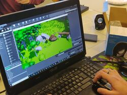

Les projets à Epitech sont assez diversifiés. On peux avoir à la fois de projets en en terminal, des projets graphiques ou encore des projets semi-graphiques. Ici je vais surtout partager des projets graphiques et semi-graphiques. En tout cas des projets où il y a quelque chose à présenter.

MY_DEFENDER
Le my_defender est un projet graphique qui conciste à codder un jeu de type "defender", c'est à dire qu'il faut défendre une certaine position contre des vagues d'ennemis. Pour cela on doit acheter et placer des tours ou autres défences. On pourra par la suite les améliorer ou les détruire.
Le my_runner est un projet graphique qui conciste à codder un jeu de type "runner", c'est à dire que l'on controle un personnage qui peut courrir sauter et attaquer. Le but du jeu est d'atteindre l'arrivée. Pour cela il va falloir esquiver les obstacles et battre les ennemis. On peut prendre comme exemple les jeux Mario en général qui sont des runners.
Le my_hunter est un projet graphique qui conciste à codder un jeu du même style que le Duck Hunt. Le principe de ce jeu est de tirer sur des cibles qui passent devant l'écran. Nous avons un nombre de balles limités alors il ne faut pas ratter sa cible.
Le my_rpg est un projet graphique qui conciste à codder un jeu de type "rpg". Il y a une quatité de jeu de ce type qui existe. Le principe du jeu est de suivre un sorte de scénario contenant des quêtes, des donjons et des boss. Notre personnage doit donc combattre des ennemis et résoudre tous type d'énigmes pour arriver à la fin de l'histoire. Un système d'objets est aussi implémenté permettant de ramasser différents objets et équipements nous permettant de suivre dans notre aventure.
Le my_sokoban est un projet semi graphique qui conciste à recoder le jeu "Sokoban". C'est un petit jeu assez connu dans lequel on joue un personnage dans un map fermée. Ce personnage doit déplacer des caisses sur des emplacements pré-définis. Attention, le joueur peut simplement pousser les caisse alors tâchez de ne pas aller trop vite et de coincer une caisse.